Динамиката изучава движението на телата под действие главно на гравитационни сили, сили на триене и сили на еластичност. Силите на еластичност ще разгледаме в Глава 5, а тук ще се ограничим с изучаването само на гравитационните сили и силите на триене. Гравитацията е едно от четирите фундаментални взаимодейстия в природата. Силите на триене и еластичните сили са проява на друго фундаментално взаимодействие електромагнитното. В края на този параграф ще направим кратък обзор на фундаменталните взаимодействия и на съвременните теории, които се стремят да обединят тези взаимодействия и да ги опишат от единна гледна точка.
Гравитационни сили
Съгласно с първия принцип на механиката телата, които не взаимодействат с други тела, се движат праволинейно и равномерно (или се намират в покой). Всички други движения се извършват под действие на сили. Какви сили заставят планетите да се въртят около Слънцето, а Луната - около Земята? Като обобщава резултатите от многобройни астрономически наблюдения Нютон стига до извода, че небесните тела взаимно се привличат със сили, имащи същата природа, както силите, с които Земята привлича заобикалящите ни тела (например падащата от дървото ябълка). Сили на всеобщо привличане (гравитационни сили) действат между всички тела във Вселената: както между Слънцето и планетите, така и между Земята и “ябълката на Нютон”. Законът на Нютон за гравитацията гласи:
Между всеки две тела (материални точки) от Вселената действат сили на взаимно привличане, наречени гравитационни сили, чиято големина е правопропорционална на произведението от масите на телата и е обратнопропорционална на квадрата на разстоянието между тях.
Ако материалните точки имат маси и и са разположени на разстояние една от друга (Фиг. \ref{fig:5.2}), големината на гравитационната сила е
където е универсална природна константа, наречена гравитационна константа Стойността на гравитационната константа е определена експериментално. Тя е
Съгласно с третия принцип на механиката гравитационните сили на привличане между две материални точки са равни по големина и противоположни по посока (Фиг. \ref{fig:5.2}). Те действат в направление на правата, съединяваща материалните точки.
\begin{figure}[h!] \centering 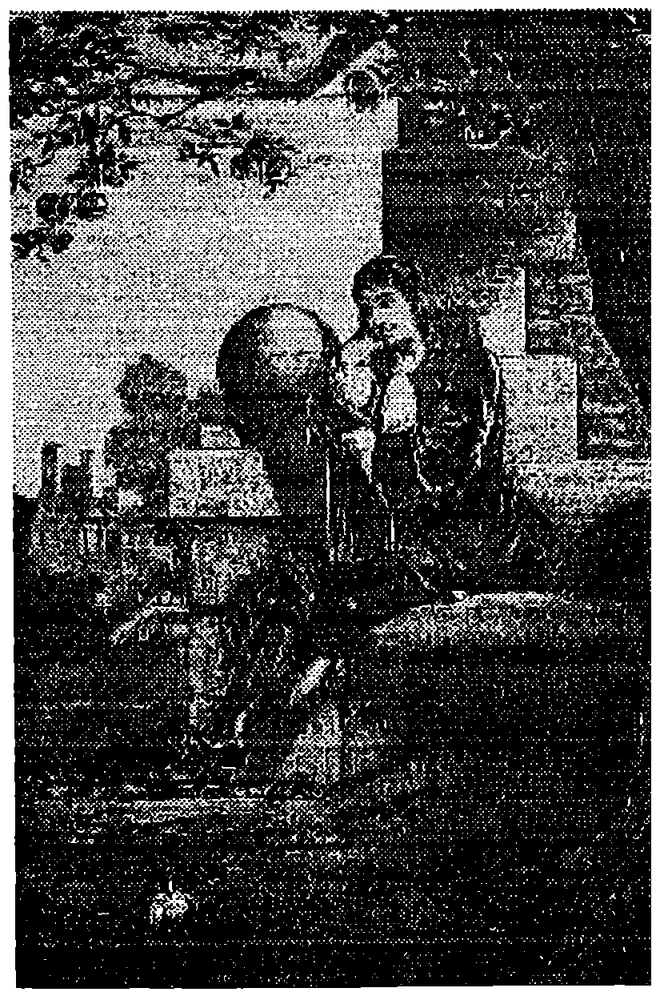 \caption{Според легендата, Нютон, наблюдавайки как пада ябълка, потънал в дълбоки размишления за причината, по която всички предмети се увличат в посока, съвпадаща с посоката към центъра на Земята. Според друг (опростен) вариант на тази легенда, когато на главата на Нютон паднала ябълка, осенила го идеята за всеобщото привличане.} \label{fig:5.1} \end{figure} \begin{figure}[h!] \centering 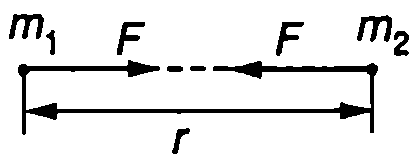 \caption{} \label{fig:5.2} \end{figure} \begin{figure}[h!] \centering 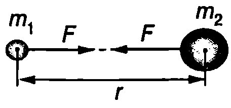 \caption{} \label{fig:5.3} \end{figure}
Ще отбележим, че уравнение \eqref{eq:5.1} изразява големината на силата на гравитационно взаимодействие между две материални точки. Може обаче да се докаже математически, че по същата формула се определят гравитационните сили на привличане между еднородно кълбо и материална точка или между две еднородни кълба (Фиг. \ref{fig:5.3}). В този случай разстоянието се измерва от центъра на кълбата.
Пример 5.1
Земята привлича Луната с гравитационна сила . Колко нютона е силата, с която Луната действа на Земята? Масата на Земята е 80 пъти по-голяма от масата на Луната. \end{psexample}
Решение
Съгласно с третия принцип на механиката силите на взаимодействие между две тела винаги са равни по големина и противоположни по посока. Следователно Луната, въпреки че има много по-малка маса, привлича Земята със същата сила (), с каквато и действа Земята.
Пример 5.2
Две еднородни топки с маси и са разположени на разстояние една от друга (Фиг. \ref{fig:5.3}). Пресметнете гравитационната сила, с която те взаимно се привличат. \end{psexample}
Решение
Гравитационната сила се определя от закона на Нютон \eqref{eq:5.1}
Това е много малка сила — приблизително равна на теглото на песъчинка с диаметър 0,1 mm. Толкова малки сили е много трудно да бъдат измерени експериментално. Затова, въпреки че гравитацията е универсално свойство на материята, във всекидневния живот ние не можем непосредствено да наблюдаваме ефекта от гравитационното привличане между две земни тела с обичайни размери.
Гравитационна константа
Гравитационната константа е измерена през 1789 година от английския физик Хенри Кавендиш (1731-1810). Опитът на Кавендиш е сред най-важните за развитието на физиката експерименти, защото е една от фундаменталните физични константи. Ако е известна нейната стойност, могат да се пресметнат редица други величини: например масите на Земята, Слънцето и на другите небесни тела и едновременно с това да се провери законът на Нютон за гравитацията.
Опитната постановка е показана схематично на Фиг. \ref{fig:5.4}. Две еднакви топчета с маси са закрепени на двата края на лека хоризонтална пръчка, която е окачена на вертикална нишка. Близо до топчетата се поставят две големи оловни кълба, всяко с маса . Гравитационните сили на привличане на топчетата към оловните кълба завъртат пръчката и нишката се усуква. Като се измери ъгълът на усукване на нишката , определя се силата . (Доказва се, че големината на силата e правопропорционална на ъгъла .) Тъй като се малък ъгъл (около ), за точното му измерване се използва светлинен лъч, отразен от прикрепеното към нишката огледалце. Когато са известни , . и (Фиг. \ref{fig:5.4}), гравитационната константа се изразява от уравнение \eqref{eq:5.1} и се пресмята числената ѝ стойност.
\begin{figure}[h!] \centering 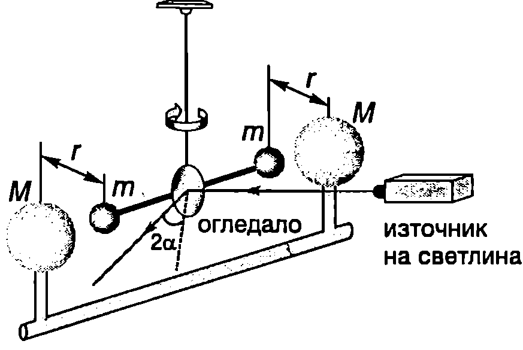 \caption{Опит на Кавендиш} \label{fig:5.4} \end{figure} Сила на тежестта
Ако приемем Земята за инерциална отправна система, познатата от училищния курс по физика сила на тежестта е равна на гравитационната сила, с която Земята привлича телата, намиращи се в близост до нейната повърхност. Ще разглеждаме Земята като еднородно кълбо с радиус и маса , а телата върху нейната повърхност ще приемем за материални точки. Тогава силата на тежестта, която действа на тяло с маса , се определя от закона на Нютон \eqref{eq:5.1}
където земното ускорение
е еднакво за всички тела, намиращи се в близост до земната повърхност. (Влиянието на въртенето на Земята върху земното ускорение е разгледано в \ref{sec:7}.)
Пример 5.3
Как се изменя земното ускорение като функция на височината над земната повърхност? Разгледайте случая, когато , където е радиусът на Земята. \end{psexample}
Решение
Земното ускорение на височина е
където е земното ускорение на повърхността на Земята, т.е. при . Тъй като по условие , ще използваме формулата , която е в сила за малки стойности на , т.е. при (в случая ). Тогава
т.е. земното ускорение намалява приблизително по линеен закон при увеличаване на височината над земната повърхност.
Пример 5.4
На Фиг. \ref{fig:5.5} е представена принципната схема на извършения от Ф. Йоли през 1878 г. опит за определяне на гравитационната константа. Към едното рамо на везни са прикрепени две блюда, свързани с нишка, която преминава през тесен канал, прокаран по диаметъра на тежко оловно кълбо с маса . Двете блюда се намират на еднакво разстояние от центъра на кълбото. Когато върху горното блюдо се постави топче с маса , везните се уравновесяват от теглилка с маса , поставена на дясното блюдо (Фиг. \ref{fig:5.5}). Ако топчето се премести на долното блюдо, за уравновесяване на везните е необходима теглилка с маса . По тези данни определете гравитационната константа. \end{psexample}
Решение
Условието за равновесие на везните, когато топчето се намира на горното блюдо, e където и са силите на тежестта, действащи върху теглилката и топчето. е големината на допълнителната гравитационна сила, с която оловното кълбо привлича топчето.
Когато топчето се премести на долното блюдо, новото условие за равновесие е Изваждаме почленно двете уравнения и получаваме , откъдето определяме гравитационната константа
В резултат на своите опити Йоли получава за гравитационната константа стойност .
\begin{figure}[h!] \centering 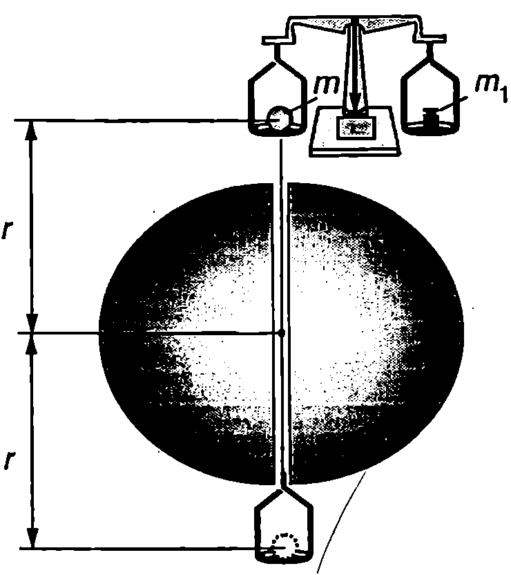 \caption{Опит на Йоли} \label{fig:5.5} \end{figure} Принцип за еквивалентност
В динамиката масата е мярка за инертността на телата. Затова масата, която влиза в уравнението на втория принцип на механиката ще наречем инертна маса (). Гравитационното взаимодействие се характеризира с гравитационната маса . В направените дотук разглеждания негласно предполагахме, че двете маси са еднакви (). Сега ще се спрем по-подробно на този въпрос, тъй като съвсем не е очевидно защо две толкова различни на пръв поглед явления - инерция и гравитация, трябва да се описват с една и съща физична величина.
Под действие на силата на тежестта тяло с инертна маса , се движи с ускорение , чиято големина се определя от уравнението на втория принцип на механиката: . От друга страна, силата на тежестта е гравитационна сила, която се изразява от нютоновия закон за гравитацията , в който влиза гравитационната маса на тялото. От тези две уравнения изразяваме ускорението където изразът в скобите в константа. Експериментално е установено с голяма точност, че всички тела, пуснати от една и съща точка, падат с еднакво ускорение . Следователно отношението , има една и съща стойност за всички тела и при подходящ избор на измерителните единици (на стойността на гравитационната константа ) то може да се положи равно на единица, т.е. .
Не съществува нито един експериментален факт, който да сочи възможни различия между гравитационната и инертната маса. Затова във физиката се формулира общ принцип, според който те са еквивалентни. Айнщайн поставя принципа за еквивалентност на гравитационната и инертната маса в основите на Общата теория на отностелността (теория на гравитацията). Към принципа за еквивалентност ще се върнем отново в следващия параграф, при изучаването на инерчните сили и състоянието на безтегловност.
Сили на триене
Движението на телата в реални условия винаги е съпроводено с действие на сили на триене. Триенето между повърхностите на две твърди тела, в отсъствие на течен или газов слой между тях, се нарича сухо триене, а триенето между два слоя от течност или газ вътрешно или вискозно триене.
При движението на твърдо тяло във флуид (течност или газ) се извършва вискозно триене между прилепналия към тялото слой от флуида и заобикалящия го флуид. Обикновено силите на вискозно триене са значително по-малки от силите на сухо триене. Затова тънък слой от смазка, който прави триенето между две повърхности отчасти вискозно, води до намаляване на силите на триене.
Първата техническа революция е свързана с откриването на колелото, защото силите на триене при търкаляне са значително по-малки от силите на триене при хлъзгане. В процеса на еволюцията природата се е изявила като “талантлив инженер”, който умело използва силите на триене в своите биологически конструкции. Например, когато ходим или бягаме, ние не се безпокоим за силите на триене в ставите. Ставите на човека и другите млекопитаещи се смазват от синовиалната течност, която се изцежда през порите на ставните хрущяли (Фиг. \ref{fig:5.6}). Затова при движение триенето в ставите е малко. В покой синовиалната течност се абсорбира обратно от хрущяла и триенето рязко нараства, което спомага за поддържане на фиксираното положение.
\begin{figure}[h!] \centering 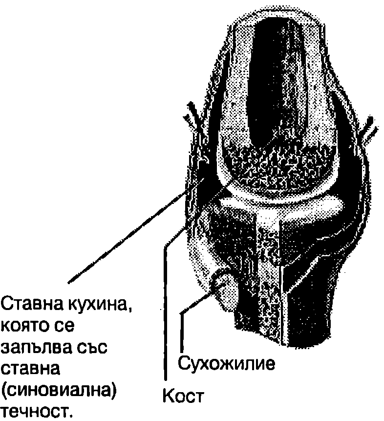 \caption{Ставите на човека и млекопитаещите се смазват от течност, която намалява триенето.} \label{fig:5.6} \end{figure}
Закони за сухото триене
Сили на триене възникват в резултат на електромагнитното взаимодействие между молекулите на триещите се повърхности. Тези молекулярни взаимодействия са сложни и все още недостатъчно изучени. Основните закономерности обаче, които характеризират сухото триене на макроскопично равнище, са установени експериментално още в 1699 г. от френския учен Амонтон, а по-късно (през 1785 г.) са изследвани по-подробно от Кулон. Да разгледаме тяло с маса , поставено на хоризонтална поставка. Силата на тежестта , която действа на тялото, се уравновесява от силата на нормална реакция на опората и тялото се намира в покой (Фиг. \ref{fig:5.7}а). Да приложим към него хоризонтална сила и постепенно да увеличаваме нейната големина. При малки стойности на тялото остава в покой, което показва, че между допиращите се повърхности възникват сили на триене. Поставката действа на тялото със сила на триене , която е равна по големина и противоположна по посока на движещата сила (Фиг. \ref{fig:5.7}б). Силата на триене , се нарича сила на триене при покой или сила на статично триене. В зависимост от големина та на движещата сила силата на триене при покой може да се изменя от нула до някаква максимална стойност . Когато силата стане по-голяма от , тялото започва да се движи и възниква сила на триене при хлъзгане , която се нарича още сила на кинетично триене. Експериментално са установени следните закономерности (закони на Амонтон-Кулон): \begin{figure}[h!] \centering 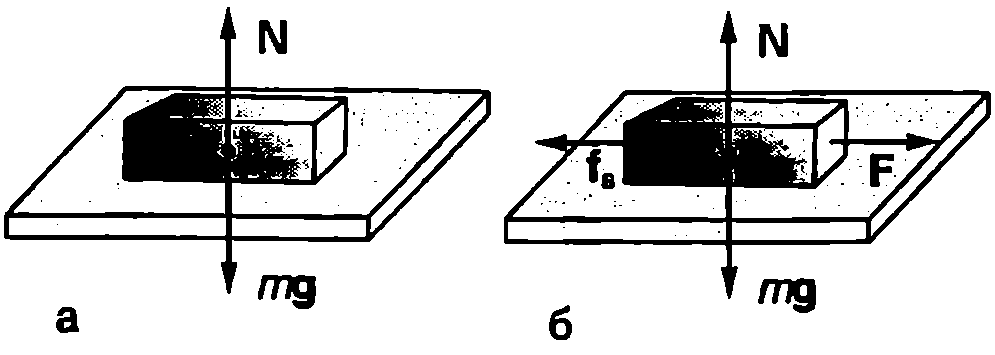 \caption{} \label{fig:5.7} \end{figure}
-
Максималната сила на триене при покой не зависи от площта на триещите се повърхности. Например, ако трупчето от Фиг. \ref{fig:5.7} се завърти, така че в контакт с поставката да е по-малката му стена, силата не се изменя.
-
За дадена двойка повърхности максималната сила на триене при покой е правопропорционална на големината на силата на нормална реакция на опората
Коефициентът на пропорционалност се нарича коефициент на статично триене. Той зависи от вида и състоянието (чистотата) на триещите се повърхности. За чисти метални повърхности обикновено е в интервала от 0,3 до 1. При използване на смазочни масла той намалява. Например синовиалната течност намалява коефициента на статично триене в ставите до 0,003.
- Силата на триене при хлъзгане (кинетично триене) е по-малка от максималната сила на статично триене . Тя не зависи от площта на триещите се повърхности и е правопропорционална на големината на силата на нормална реакция на опората
където е коефициент на кинетично триене, който подобно на зависи от вида и състоянието на триещите се повърхности.
- Коефициентът на кинетично триене практически не зависи от скоростта на движение.
Ще отбележим, че в редица случаи разликата между коефициентите на статично и кинетично триене е малка. Затова в много от задачите по механика тя се пренебрегва и се използва един и същ коефициент на триене - както за определяне максималната сила на триене при покой, така и на силата на триене при хлъзгане.
Пример 5.5
Коефициентът на триене между две повърхности, например между книга и канцеларска гума, може да се определи по следния начин: Гумата се поставя върху книгата и книгата бавно се накланя. При определен ъгъл на наклона гумата започва да се хлъзга по книгата. Определете коефициента на триене , ако . \end{psexample}
Решение
В задачите от движение на тяло, на което действат сили на триене, трябва да се обърне специално внимание на правилното определяне големината и посоката на тези сили.
-
Силата на триене при покой е равна по големина и противоположна по посока на равнодействащата на всички други сили, приложени към тялото. Обикновено от данните в условието на задачата може да се съобрази в каква посока тялото би започнало да се движи, ако нямаше триене силата на триене при покой е насочена в противоположната на тази посока. Например, ако без триене тялото би започнало да се движи на изток, следва изводът, че силата на триене, която го задържа в покой, е насочена на запад.
-
Силата на триене при хлъзгане винаги е насочена в противоположна на движението (на скоростта) посока. Големината и е . Същата формула може да се използва при пресмятане на максималната сила на триене при покой. Важен момент при решаването на задачи в определянето на големината на силата на реакция на опората . Ще обърнем внимание, че силата на реакция е равна по големина на силата на тежестта, , само в частния случай, когато тялото е поставено върху хоризонтална опора и не му действат други сили, които имат вертикални компоненти (освен силата на тежестта и силата на реакция на опората). В общия случай силата на реакция не е равна на силата на тежестта. Големината и се определя от уравнението на втория принцип на механиката, което се записва по компоненти: едната координатна ос се избира успоредна на опората, а другата перпендикулярна на опората
В конкретната задача на гумата действат три сили (Фиг. \ref{fig:5.8}): силата на тежестта , силата на реакция на опората и силата на триене при покой . (Силата на триене удържа гумата в покой, т.е. тя е насочена обратно на посоката, в която гумата би започнала да се движи, ако нямаше триене.) Записваме уравнението на втория принцип на механиката
където сме отчели, че гумата е в покой, т.е. . Избираме правоъгълна координатна система (Фиг. \ref{fig:5.8}) и записваме горното векторно уравнение по компоненти
по : ;
по : .
\begin{figure}[h!] \centering 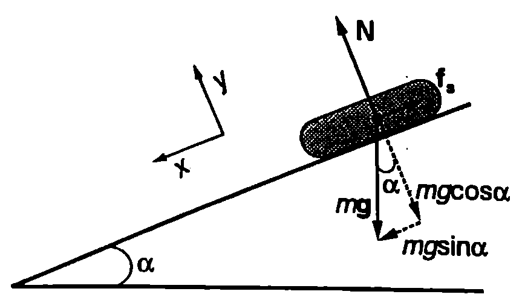 \caption{} \label{fig:5.8} \end{figure}
От второто уравнение изразяваме силата на тежестта и я заместваме в първото уравнение. За силата на триене получаваме
Когато ъгълът на наклона стане , силата на триене при покой достига максималната си стойност , след което гумата започва да се хлъзга надолу. Заместваме и , съкращаваме на и за коефициента на триене получаваме
; при , k = 0,58.
Пример 5.6
Тяло с маса започва да се хлъзга по хоризонтална равнина под действие на сила , която сключва ъгъл с хоризонта. Коефициентът на триене между тялото и равнината е . Определете ускорението на тялото. \end{psexample}
Решение
От условието на задачата става ясно, че тялото започва да се движи по посока на хоризонталната компонента на силата . Следователно силата на триене при хлъзгане е насочена в противоположната посока (Фиг. \ref{fig:5.9}). Записваме уравнението на втория принцип на механиката за движението на тялото
Избираме координатна система с ос , насочена хоризонтално, по посока на ускорението а на тялото, и ос , която е насочена вертикално нагоре. Записваме уравнението на втория принцип на механиката по компоненти
\begin{figure}[h!] \centering 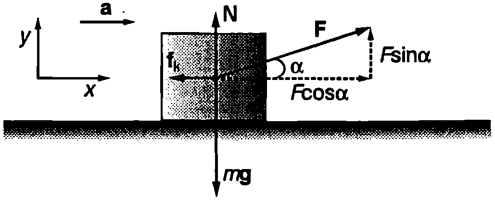 \caption{} \label{fig:5.9} \end{figure} по : ;
по : .
Силата на триене при хлъзгане . От уравнението за -компонентите изразяваме силата на реакция на опората и я заместваме във формулата за силата на триене . След това заместваме в уравнението за -компонентите и определяме ускорението
Фундаментални взаимодействия
Независимо от огромното разнообразие от взаимодействия между телата, съгласно със съвременните представи всички те се свеждат до четири фундаментални взаимодействия. Това са (подреждането е направено по интензивността на взаимодействията): 1. гравитационно взаимодействие; 2. слабо взаимодействие, на което в повечето случаи се дължат процесите на разпадане и превръщане на елементарните частици; 3. електромагнитно взаимодействие; 4. силно взаимодействие между т. нар. адрони голям клас елементарни частици, към които спадат протоните и неутроните.
Съвременните физични теории показват, че всяко взаимодействие се осъществява чрез обмен на определен вид частици (кванти), които са носители на взаимодействието. Най-добре изучено е електромагнитното взаимодействие, чиито носители са квантите на електромагнитното поле, наречени фотони. През 1983 г. бяха експериментално открити т. нар. междинни векторни бозони, които са носители на слабото взаимодействие. Понастоящем е разработена единна теория на електрослабите взаимодействия.
Носители на силното взаимодействие са глюоните, частици които “слепват” кварките - съставните частици на адроните. Една от проявите на силното взаимодействие са ядрените сили, които удържат протоните и неутроните в ядрата на атомите. Ще отбележим, че взаимодействието между отделните адрони (например между протоните и неутроните в ядрото) е само остатъчен ефект от много по-интензивното взаимодействие между техните градивни частици кварките, подобно на междумолекулното взаимодействие, което може да се разглежда като остатъчен ефект от електричното взаимодействието между електроните и ядрата.
Теорията предсказва два вида кванти на гравитационното взаимодействие, наречени гравитони и гравитино. Създаването на цялостна квантова теория на гравитацията се сблъсква със сериозни трудности. Гравитационните вълни и квантите на гравитационното поле все още не са експериментално регистрирани.
Правят се опити да се обединят електрослабите и силните взаимодействия (Велико обединение) и да се опишат от единна теория. Особен интерес през последните години предизвиква супергравитацията - теория, която прави опит да приложи единен подход при описване на всички взаимодействия, включително и гравитационното.
Задачи
-
Когато се допират, две еднакви еднородни кълба взаимно се привличат с гравитационна сила . Ако кълбата се раздалечат, така че разстоянието между центровете им да стане 1 m, силата на привличане е . Колко е радиусът на кълбата?
-
Пресметнете гравитационната сила, с която Земята привлича Луната. Масата на Земята е kg, масата на Луната в kg, а разстоянието от Земята до Луната е m.
-
Колко е ускорението при свободно падане на повърхността на планета, която има същата маса, както Земята, но е с 2 пъти по-малък радиус?
-
а) Колко е ускорението на свободно падане на повърхността на планета с радиус и средна плътност ?
- На Земята Малкият принц тежи 350 N. Колко е теглото на Малкия принц на неговата планета, която има същата плътност, както Земята, но радиусът й е 100 пъти по-малък?
-
Пресметнете средната плътност на Земята , ако са известни земното ускорение , радиусът на земята и гравитационната константа .
-
Планетите действат с големи гравитационни сили на своите спътници. Ако разстоянието от спътника до центъра на планетата е по-малко от определена критична стойност , гравитационната сила става толкова голяма, че разрушава спътника на малки парчета. Критичното разстояние се определя по формула та , където е радиусът на планетата, е плътността на планетата, а е плътността на спътника. Учените предполагат, че е възможно пръстените на планетите гиганти да са се получили в резултат на гравитационно разрушаване на спътници.
Най-близкият до Юпитер спътник Йо се движи по орбита с радиус 421 000 km. На какво разстояние Йо трябва да се доближи до центъра на Юпитер, за да се разруши на парчета? Радиусът на Юпитер e 71 000 km, а плътността му е около 3 пъти по-малка от плътността на Йо.
-
Три материални точки, всяка с маса , са разположени във върховете на равностранен триъгълник със страна . Определете големината на гравитационната сила, която действа на всяка една от материалните точки. Гравитационното взаимодействие с околните тела не се отчита.
-
На Фиг. \ref{fig:5.10} в показано еднородно кълбо с радиус , в което има сферична дупка с радиус . Масата на кълбото преди да се издълбае дупката е . Определете гравитационната сила, с която кълбото привлича малкото топче с маса , разположено на разстояние от центъра на кълбото.
Указание. От гравитационната сила, с която действа плътно кълбо, извадете гравитационната сила, с която действа веществото, с което мислено запълваме сферичната дупка, за да получим плътно кълбо.
-
Шейна с маса се изкачва с постоянна скорост по наклонен участък от пистата с ъгъл на наклона . На шейната действа сила , която е насочена нагоре, успоредно на пистата. Определете коефициента на триене между шейната и пистата.
-
Тяло се хлъзга надолу по наклонена равнина с ъгъл на наклона . Определете ускорението на тялото, ако коефициентът на триене между тялото и наклонената равнина е .
-
На хокейна шайба е придадена начална скорост, така че тя се хлъзга нагоре по наклонена равнина с ъгъл на наклона . Шайбата се движи равнозакъснително с ускорение , докато спре. След това тя започна да се спуска надолу с ускорение /2. Определете коефициента на триене между шайбата и наклонената равнина.
-
По наклонена равнина с ъгъл на наклона се спуска тяло с маса , на което действа хоризонтална сила с големина (Фиг. \ref{fig:5.11}). Коефициентът на триене между тялото и равнината е .
а) Определете ускорението на тялото.
б) Пресметнете числената стойност на ускорението, ако , , .
- По наклонена равнина с ъгъл на наклона се изкачва тяло с маса , на което действа хоризонтална сила с големина (Фиг. \ref{fig:5.12}). Коефициентът на триене между тялото и равнината е .
а) Определете ускорението а на тялото.
- Пресметнете числената стойност на ускорението, ако , , .
- При скоростно спускане скиор с маса kg се движи по склон с ъгъл на наклона . Коефициентът на триене между ските и снега е . Силата на съпротивление на въздуха е правопропорционална на квадрата на скоростта: , където kg/m. Колко е максималната скорост , която може да достигне скиорът?
\begin{figure}[h!] \centering 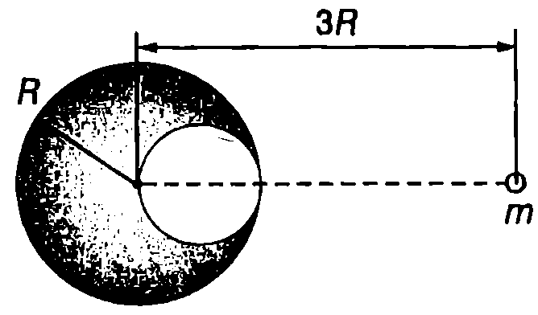 \caption{} \label{fig:5.10} \end{figure}
\begin{figure}[h!] \centering 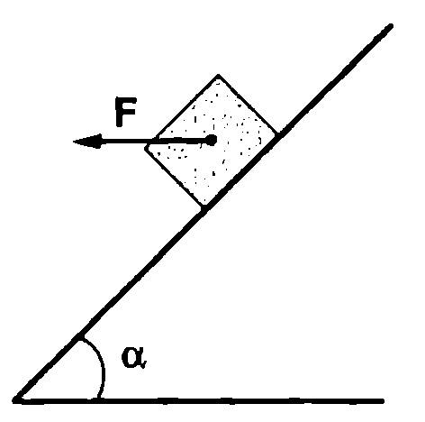 \caption{} \label{fig:5.11} \end{figure}
\begin{figure}[h!] \centering 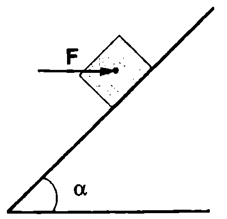 \caption{} \label{fig:5.12} \end{figure}